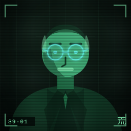
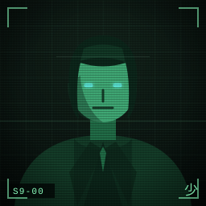
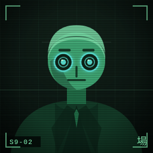
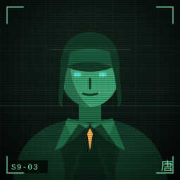
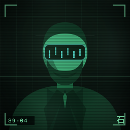
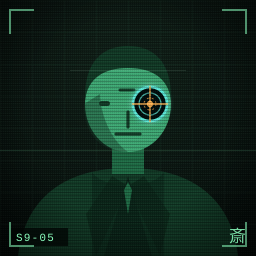
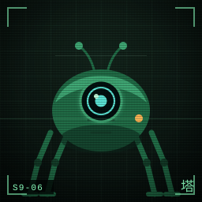
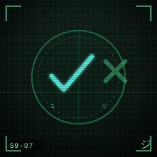

Eight original portraits for the Section 9 roster, drawn in one hand: a phosphor‑green tonal ramp on a near‑black tube, one cyan trait each, a wireframe grid, scanlines and a hint of dither. Evoked, not traced — no film frame, logo or likeness.







